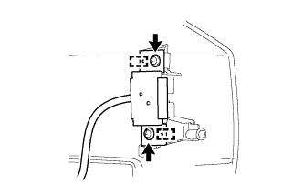

НАРУЖНАЯ НАКЛАДКА ДВЕРИ БАГАЖНОГО ОТДЕЛЕНИЯ (для моделей с кронштейном запасного колеса) > ПОВТОРНАЯ СБОРКА |
| Параметр / Устройство | Температура |
| Нижний кронштейн опоры заднего номерного знака | 20–30°C (68–86°F) |
| Декоративный элемент двери багажного отделения | 20–30°C (68–86°F) |
| 1. УСТАНОВИТЕ ЭЛЕМЕНТ ЗАЩИТЫ НАРУЖНОЙ НАКЛАДКИ ДВЕРИ БАГАЖНОГО ОТДЕЛЕНИЯ |
для нижнего кронштейна опоры заднего номерного знака:
При использовании нового нижнего кронштейна опоры заднего номерного знака:
При повторном использовании нижнего кронштейна опоры заднего номерного знака:
Установите элемент защиты наружной облицовки двери багажного отделения.
для колпака лампы освещения заднего номерного знака:
При использовании нового декоративного элемента двери багажного отделения:
При повторном использовании декоративного элемента двери багажного отделения:
Установите элемент защиты наружной облицовки двери багажного отделения.
| 2. УСТАНОВИТЕ ДЕКОРАТИВНЫЙ ЭЛЕМЕНТ ДВЕРИ БАГАЖНОГО ОТДЕЛЕНИЯ |
Введите в зацепление 6 захватов, чтобы установить декоративный элемент двери багажного отделения.
| 3. УСТАНОВИТЕ ВЫКЛЮЧАТЕЛЬ ЭЛЕКТРОННОГО КЛЮЧА БАГАЖНОГО ОТДЕЛЕНИЯ (для моделей с системой посадки и запуска) |
|  |
Введите в зацепление 2 направляющих, чтобы установить выключатель электронного ключа на двери багажного отделения.
Заверните 2 винта.
| 4. УСТАНОВИТЕ ЛАМПУ ОСВЕЩЕНИЯ НОМЕРНОГО ЗНАКА В СБОРЕ |
Закрепите лампу освещения номерного знака 4 винтами.
| 5. УСТАНОВИТЕ КОЛПАК ЛАМПЫ ОСВЕЩЕНИЯ ЗАДНЕГО НОМЕРНОГО ЗНАКА |
Установите колпак лампы освещения заднего номерного знака и закрепите его 5 винтами.
| 6. УСТАНОВИТЕ ШНУР ЛАМПЫ ОСВЕЩЕНИЯ НОМЕРНОГО ЗНАКА (для моделей без системы посадки и запуска) |
Подсоедините разъем, чтобы установить шнур лампы освещения номерного знака.